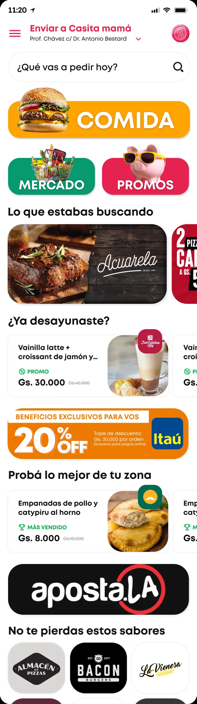
61K users, 300K orders, 1,268 vendors — and a home everyone agreed was underperforming without agreeing on why. Open scope meant I owned the framing: research first, then two directions, then a defended decision. The output of this project isn't a screen. It's the argument that produced it.
I was brought in without a defined scope — the home "worked", but nobody could explain why it wasn't converting. So instead of redesigning a screen, I started by defining the question the home actually had to answer: is this a place to show what monchis is, or a place to get to the next order fast? Everything that follows — including the two paths — comes from that tension.
I only kept findings that changed a decision. Each one is paired with the constraint it imposed on any design direction — which is exactly what made two paths possible instead of one.
Low fidelity was where the real arguments got settled: block order, how many verticals survive above the fold, where the personalization slot lives, and what happens to the header on scroll. It's also where the sharpest idea of the project appeared — a contextual box driven by the moment of the day — and where I worked out the two things that make an idea like that survivable: how much space it's allowed to take from commercial content, and what happens when the user dismisses it. Carrying those unresolved trade-offs into review is what made two complete paths necessary instead of one polished opinion.
Defining one component with four content states — instead of four hardcoded sections — is what made time-awareness affordable to build and to maintain. The rules and the fallback were written at wireframe stage, before a single visual decision, which is why the feature survived scoping.
Top locals running a promo, a match against onboarding preferences, and a payment incentive. Defining the three cases at wireframe stage is what kept the slot from turning into undifferentiated ad space once real content arrived.
The findings pointed clearly at what the home had to do — but not at how much brand we were willing to trade for speed. Rather than pick for the business, I built both answers to the same brief, each internally consistent down to error and loading states. It moved the review from "I like this one" to "which cost are we choosing".
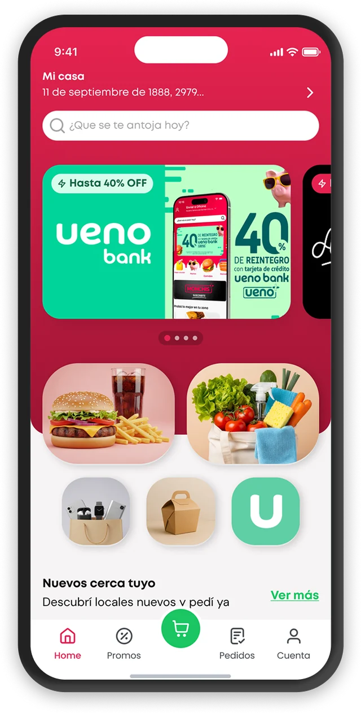
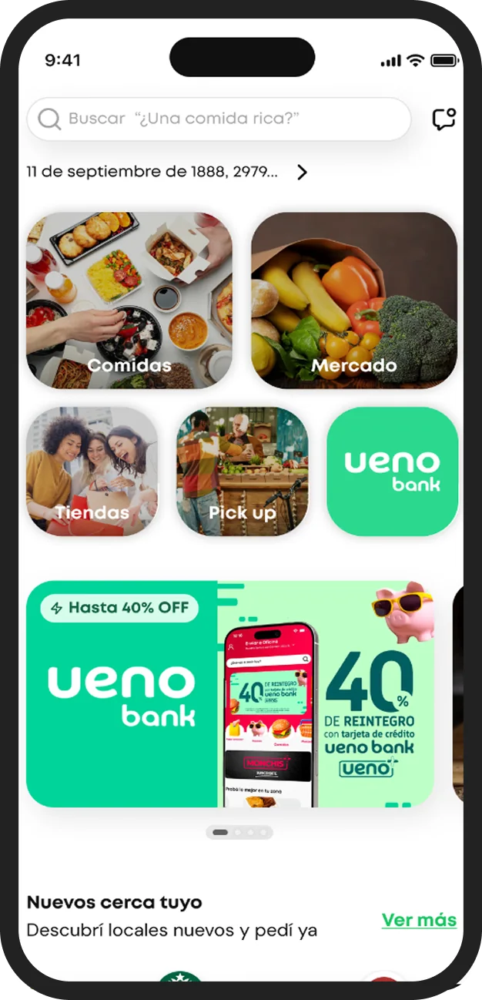
Ordering to the wrong address costs money, time and trust — so in V1 location isn't just displayed, it warns: "¡Cuidado! Estás lejos de tu casa. ¿Querés hacer el pedido igual?", dismissible and never blocking. The same pass covered the states nobody designs: skeleton loading on the real grid, and a persistent offline snackbar.
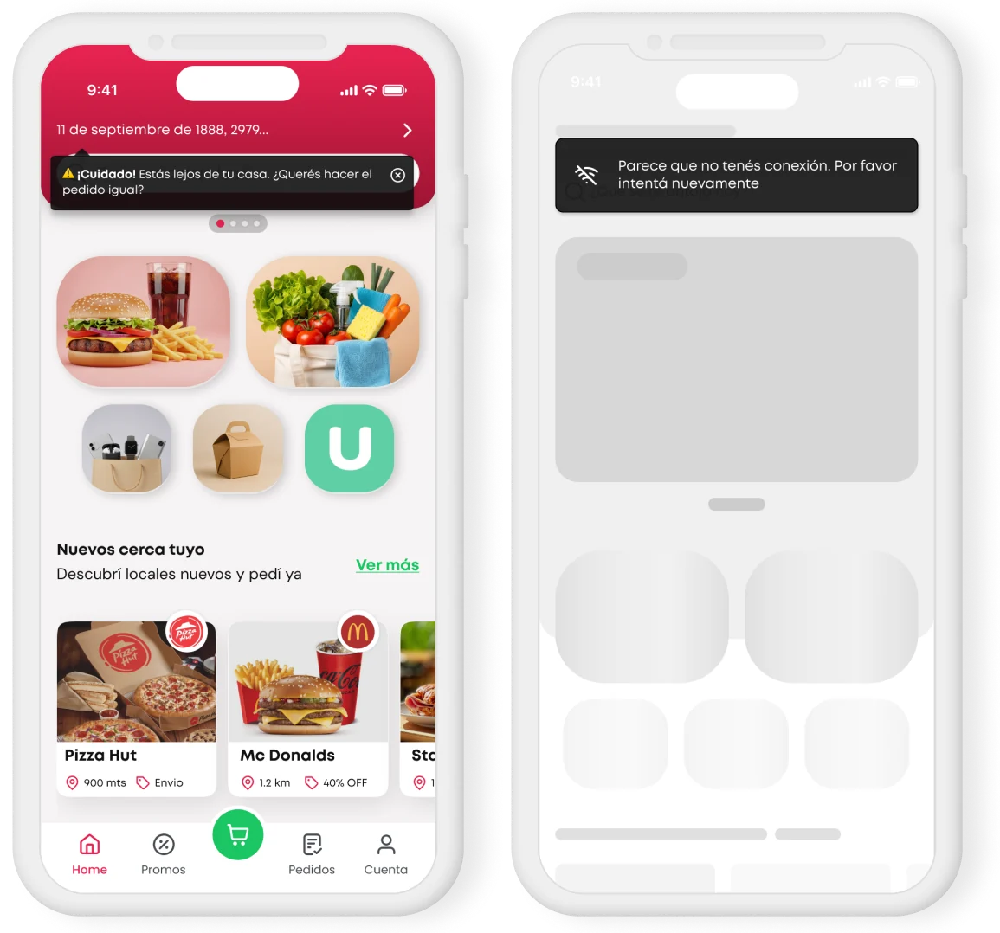
Putting search at the top only works if it stays there. In V2 the header collapses into a compact sticky bar — search plus abbreviated address — and a floating "Volver arriba" returns the full context without manual scrolling. What V2 had to solve separately was the alert: without a red block to dock into, the proximity warning becomes a contextual snackbar.
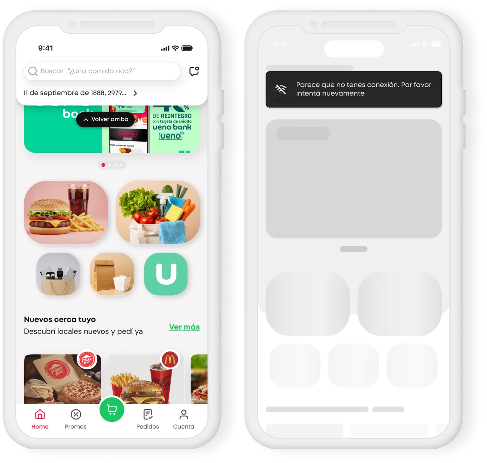
| Criterion — tied to a finding | V1 · Brand-led | V2 · Task-led |
|---|---|---|
| Time to first action (F02) | High — verticals below the fold | Low — everything above the fold |
| Search persistence (F01) | Scrolls away with the header | Sticky, collapses but stays |
| Vertical legibility (F05) | Image only — requires decoding | Photo + label |
| Room for personalization (F04) | Competes with hero promo | Dedicated high slot |
| Address error prevention | Highest — address is the headline | Needs a dedicated pattern |
| Brand presence | High | Medium — carried by the system |
| Category scalability | Limited | High |
V2's structure survived contact with delivery, and the personalization layer the wireframes had been arguing for finally landed on top of it: favourite places, time-aware carousels, and a search bar that stopped being a field and started being a conversation.
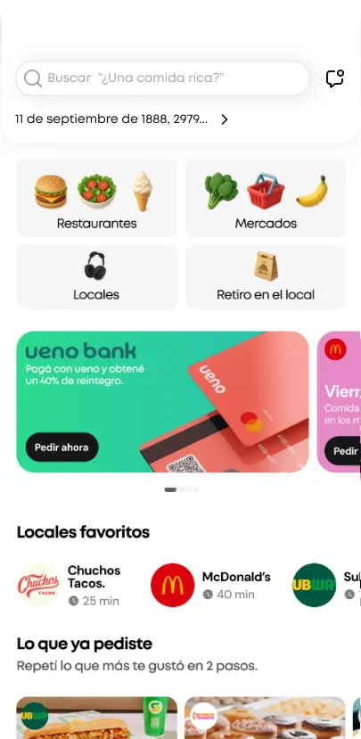
Both paths agreed on one thing and disagreed on everything else — search had to lead. V2 won the structure argument, but this is the component that made the decision worth making: once search is permanently on screen, it stops being a field you fill and becomes the surface that carries context.
The animated search bar is the emotional centerpiece of the new home. Instead of a static placeholder, it rotates contextual suggestions based on time of day, user history, and active promotions — making the app feel alive, personal, and aware.
The animated search bar is the emotional centerpiece of the new home. Instead of a static "¿Qué vas a pedir?" it rotates contextual suggestions based on time of day, user preferences and active promotions — making the app feel alive and personal.
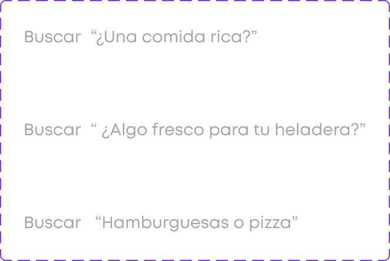
Every element of the new home was designed with a clear purpose: reduce friction, surface relevant content, and drive the user toward their first order.
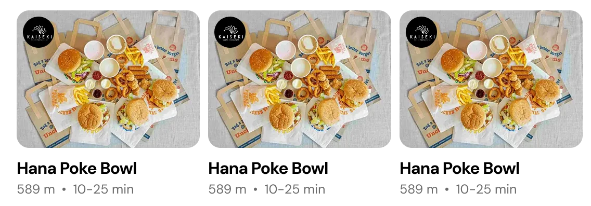
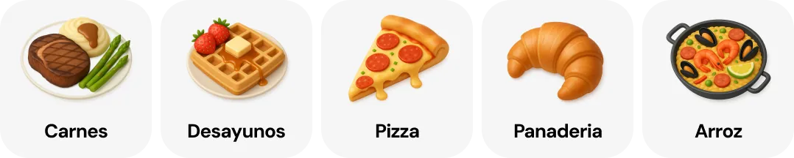
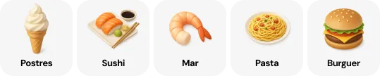
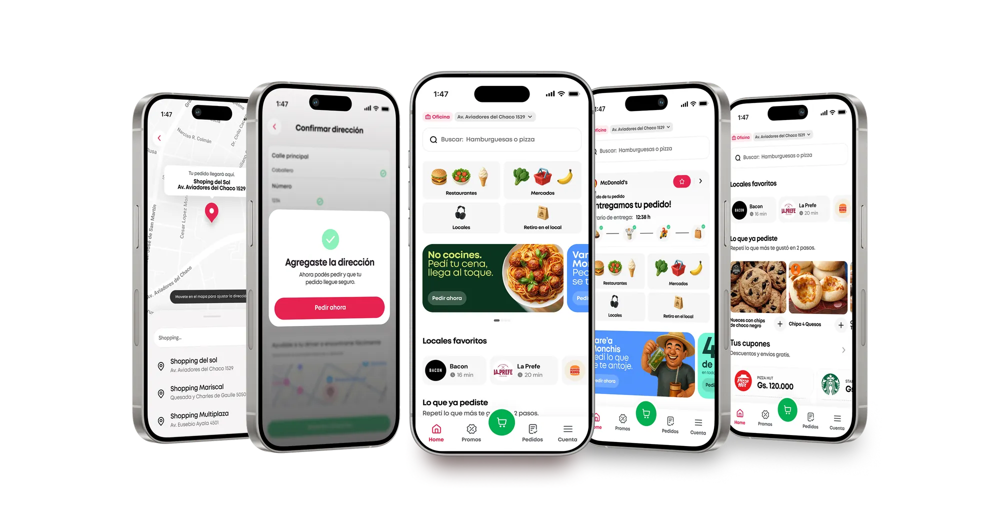